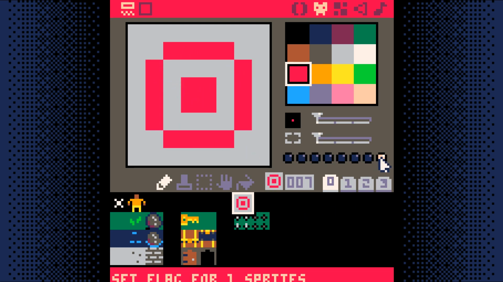

Winning and Losing
Add a new sprite that the player has to move over to win the game.
Set the last flag on this sprite. This is what the game will use to know the player has won the game.
Add game_win and game_over to _init in the game loop tab 0.
function _init()
map_setup()
make_player()
game_win=false
game_over=false
end
Add a new code tab to hold the win/lose code. This will be tab 5.
In this tab, add two new functions: check_win_lose, draw_win_lose
-- win/lose code
function check_win_lose()
if (is_tile(win,p.x,p.y)) then
game_win=true
game_over=true
elseif (is_tile(lose,p.x,p.y)) then
game_win=false
game_over=true
end
end
function draw_win_lose()
camera()
if (game_win) then
print("S you win! S",37,64,7)
else
print("game over!",38,64,7)
end
end
Change _update to only run if not game_over and call check_win_lose
function _update()
update_map()
move_player()
if (not game_over) then
update_map()
move_player()
check_win_lose()
end
end
Change _draw to only draw if not game_over else draw_win_lose
function _draw()
cls()
draw_map()
draw_player()
if (btn(X)) show_inventory()
if (not game_over) then
draw_map()
draw_player()
if (btn(X)) show_inventory()
else
draw_win_lose()
end
end
End Result
Save your changes with ctrl+S. Run them with ctrl+R. You should now be able to walk into spikes to lose and walk into the target to win. Next, we will add a way to easily reset the game.
DownloadSource Code
Here is the full source code for this step. If you want your code to match what
is shown in the tutorial, everything after a -->8 line should go in a new
tab. This is not necessary, but failure to do so will make your code harder to
navigate, reason about, and edit.
Note: The tool used to extract the full code listings does not properly
handle PICO-8's glyph characters. All glyph characters are replaced with an
_. You will need to manually replace them with the correct character.
--game loop
function _init()
map_setup()
make_player()
game_win=false
game_over=false
end
function _update()
if (not game_over) then
update_map()
move_player()
check_win_lose()
end
end
function _draw()
cls()
if (not game_over) then
draw_map()
draw_player()
if (btn(_)) show_inventory()
else
draw_win_lose()
end
end
-->8
--map code
function map_setup()
--timers
timer=0
anim_time=30 --30 = 1 second
--map tile settings
wall=0
key=1
door=2
anim1=3
anim2=4
lose=6
win=7
end
function update_map()
if (timer<0) then
toggle_tiles()
timer=anim_time
end
timer-=1
end
function draw_map()
mapx=flr(p.x/16)*16
mapy=flr(p.y/16)*16
camera(mapx*8,mapy*8)
map(0,0,0,0,128,64)
end
function is_tile(tile_type,x,y)
tile=mget(x,y)
has_flag=fget(tile,tile_type)
return has_flag
end
function can_move(x,y)
return not is_tile(wall,x,y)
end
function swap_tile(x,y)
tile=mget(x,y)
mset(x,y,tile+1)
end
function unswap_tile(x,y)
tile=mget(x,y)
mset(x,y,tile-1)
end
function get_key(x,y)
p.keys+=1
swap_tile(x,y)
sfx(1)
end
function open_door(x,y)
p.keys-=1
swap_tile(x,y)
sfx(2)
end
-->8
--player code
function make_player()
p={}
p.x=3
p.y=2
p.sprite=1
p.keys=0
end
function draw_player()
spr(p.sprite,p.x*8,p.y*8)
end
function move_player()
newx=p.x
newy=p.y
if (btnp(_)) newx-=1
if (btnp(_)) newx+=1
if (btnp(_)) newy-=1
if (btnp(_)) newy+=1
interact(newx,newy)
if (can_move(newx,newy)) then
p.x=mid(0,newx,127)
p.y=mid(0,newy,63)
else
sfx(0)
end
end
function interact(x,y)
if (is_tile(key,x,y)) then
get_key(x,y)
elseif (is_tile(door,x,y) and p.keys>0) then
open_door(x,y)
end
end
-->8
--inventory code
function show_inventory()
invx=mapx*8+40
invy=mapy*8+8
rectfill(invx,invy,invx+48,invy+24,0)
print("inventory",invx+7,invy+4,7)
print("keys "..p.keys,invx+12,invy+14,9)
end
-->8
--animation code
function toggle_tiles()
for x=mapx,mapx+15 do
for y=mapy,mapy+15 do
if (is_tile(anim1,x,y)) then
swap_tile(x,y)
sfx(3)
elseif (is_tile(anim2,x,y)) then
unswap_tile(x,y)
sfx(3)
end
end
end
end
-->8
--win/lose code
function check_win_lose()
if (is_tile(win,p.x,p.y)) then
game_win=true
game_over=true
elseif (is_tile(lose,p.x,p.y)) then
game_win=false
game_over=true
end
end
function draw_win_lose()
camera()
if (game_win) then
print("_ you win! _",37,64,7)
else
print("game over! :(",38,64,7)
end
end